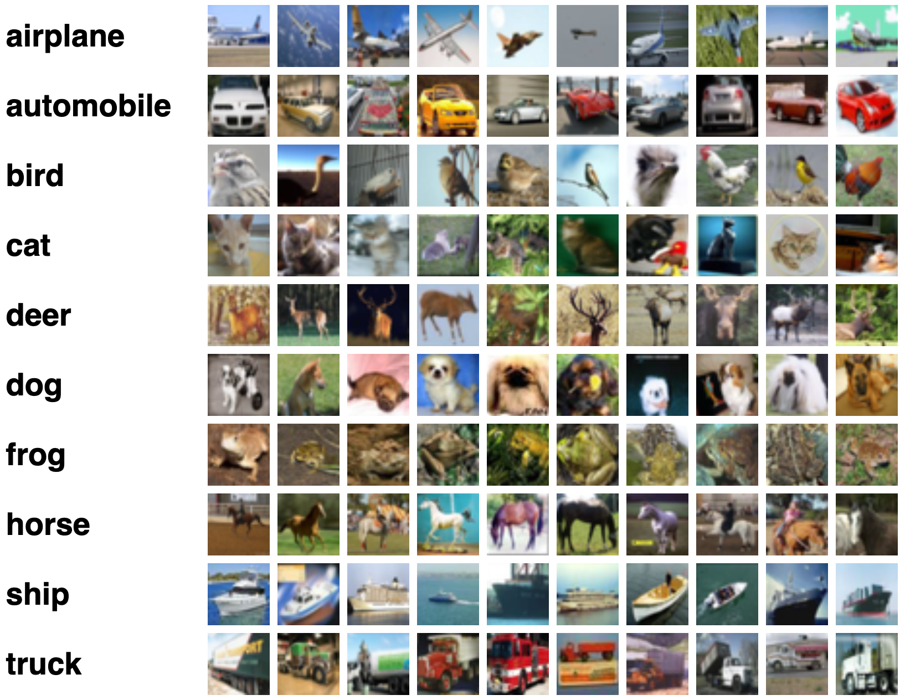
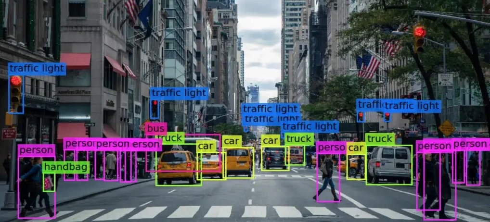
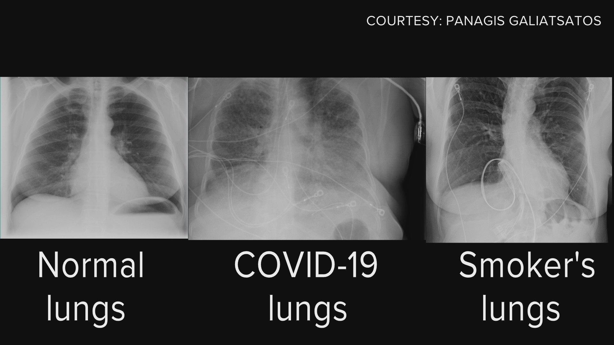
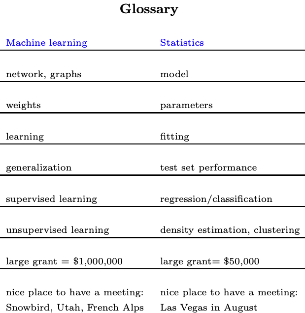
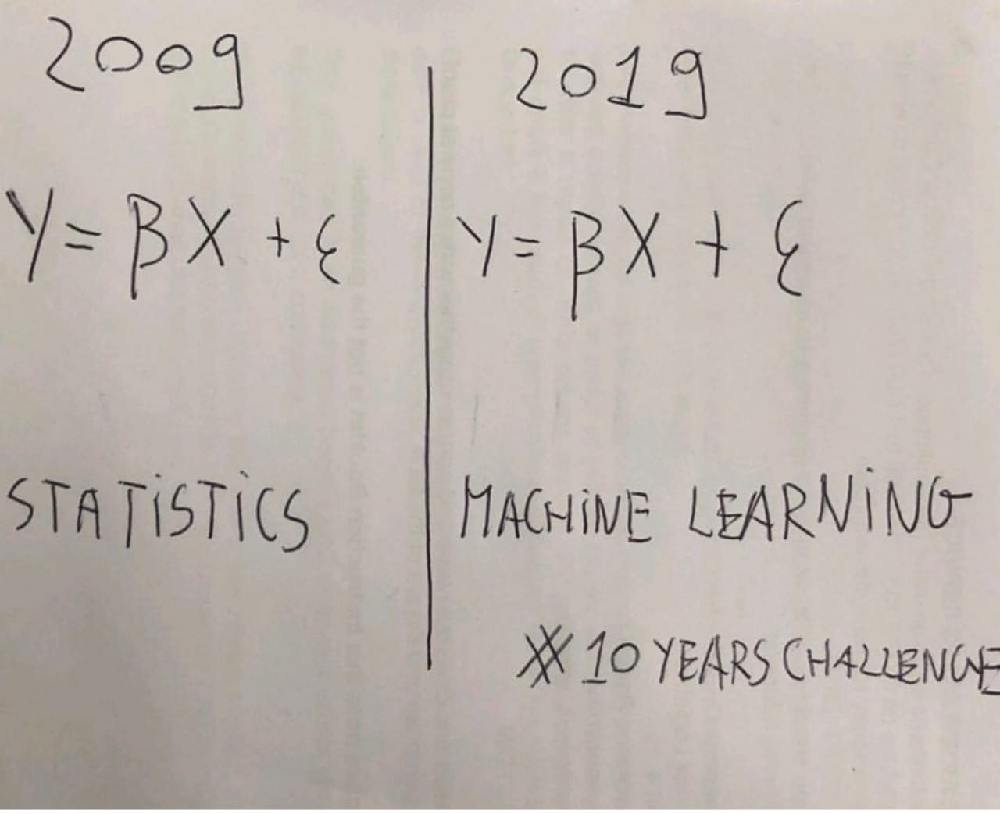
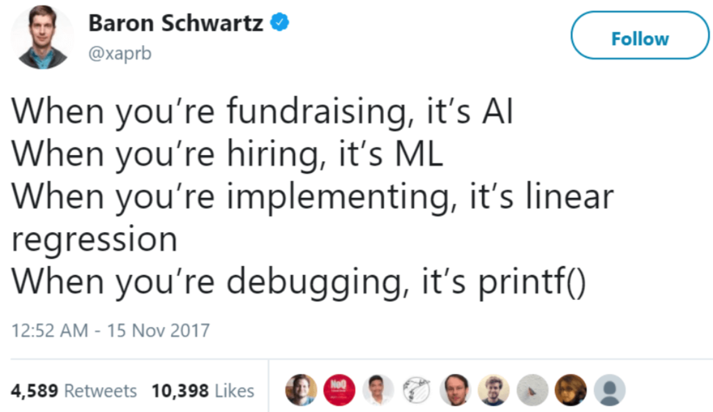
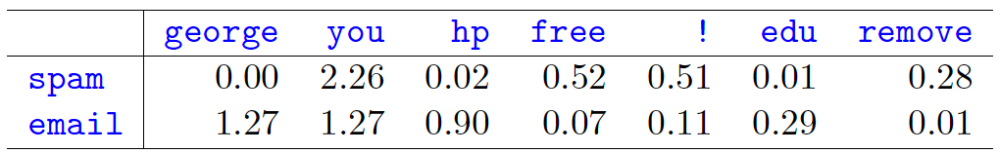
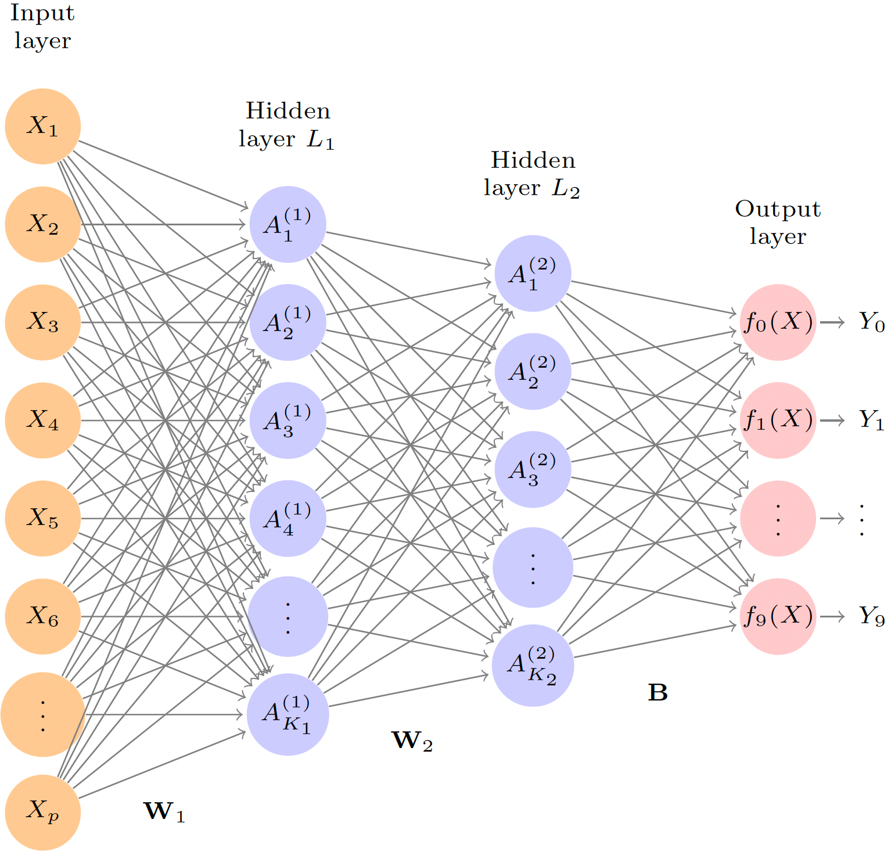
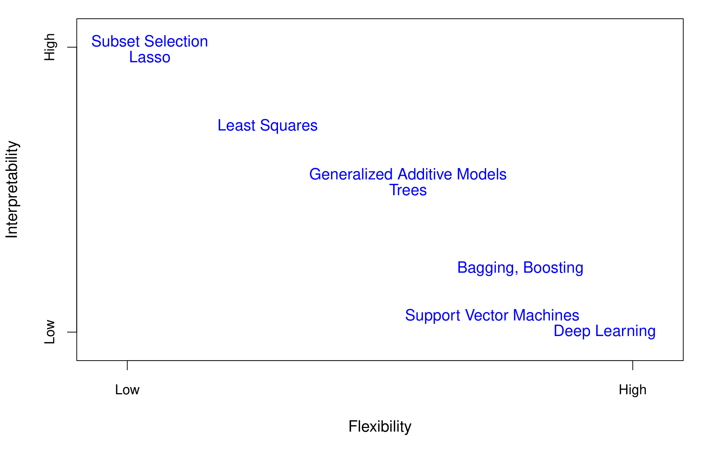

Overview of Statistical Machine Learning 💻
MSSC 6250 Statistical Machine Learning
Department of Mathematical and Statistical Sciences
Marquette University
Image/Object Recognition


Recommender System

COVID Detection
Stock Price Forecasting

Risk Factors for Cancer
How We Solve Real-Life Problems
- We describe and formulate our problems/questions by models.
- Solve problems/Answer questions by doing inference and/or predictions from the built model using the information from the data and computer algorithms.
So what is (Statistical) Machine Learning?
Machine Learning vs. Statistical Learning
- Machine learning (ML) is a field in Computer Science (CS).
“A computer program is said to learn from experience (E) with respect to some class of tasks (T) and performance measure (P) if its performance at tasks in T, as measured by P, improves with experience E.” – Tom Mitchell, Professor of ML at Carnegie Mellon University
computer programs = computing software and system
experience = data (objective and/or subjective)
tasks = problems being solved by the computing system
The ML algorithms are mainly for predictive modeling problems, and many have been borrowed from Statistics, for example, linear regression.
ML is a CS perspective on modeling data with a focus on algorithmic methods.
- Wait, I am a statistical modeler (computational statistician), and this is exactly what I am doing!
Machine Learning vs. Statistical Learning
- Statistical learning, used to be called Applied Statistics (what a “fancy” name, 🤣), arose as a subfield of Statistics.
Statistical learning refers to a set of tools for modeling and understanding complex datasets. – An Introduction to Statistical Learning
…to extract important patterns and trends, and understand “what the data says.” We call this learning from data. – The Elements of Statistical Learning
tools = mathematics, computing hardware/software/architecture, programming languages, algorithms, etc.
Statistical learning is a mathematical perspective on modeling data with a focus on goodness of fit.
Machine Learning vs. Statistical Learning
Machine learning emphasizes algorithms and automation.
Statistical learning emphasizes modeling, interpretability, and uncertainty.
- The distinction is blur:
- A machine learner needs a well-built statistical model that quantifies uncertainty about prediction
- A statistical learner needs a computationally efficient algorithm to deal with large complex data.
- BUT, one thing for sure. Machine learning has the upper hand in marketing!
Fancy Terms and Larger Grant!
Source: http://statweb.stanford.edu/~tibs/stat315a/glossary.pdf
Source: All of Statistics
Types of Learning

Source: https://towardsdatascience.com/machine-learning-algorithms-in-laymans-terms-part-1-d0368d769a7b
Supervised Learning
Response Y (output, outcome, target, label, dependent/endogenous variable)
Vector of p predictors X = (X_1, X_2, \dots, X_p) (inputs, features, regressors, covariates, explanatory/exogenous/independent variable).
Regression: Y is numeric (e.g price, blood pressure). (if p = 1, simple regression; if p > 1, multiple regression)
Classification: Y is categorical (e.g survived/died, digit 0-9 (MNIST), cancer class of tissue sample).
- Training data \mathcal{D} = \{(x_1, y_1), \dots ,(x_n , y_n)\} =\{(x_i, y_i)\}_{i=1}^n, x_i \in \mathbf{R}^p, y_i \in \mathbf{R}^d.
Goal: Use training data (E) to train our model for better (w.r.t. P) inference/prediction (T) on the response.
- Learn a mapping from inputs to outputs Y = f(X).
Regression Example
- Goal: Establish the relationship between salary and demographic variables.
Source: ISL Fig. 1.1
Statistics Nah… Machine Learning Neat!
Source: https://towardsdatascience.com/the-actual-difference-between-statistics-and-machine-learning-64b49f07ea3
Statistics Nah… Machine Learning Neat!
Classification Example
- Goal: Build a customized spam filtering system
Source: http://penplusbytes.org/strategies-for-dealing-with-e-mail-spam/
Classification Example
- Data: 4601 emails sent to George at HP, before 2000. Each is labeled as spam or email.
- Inputs: relative frequencies of 57 of the commonly occurring words and punctuation marks.

Objectives of Supervised Learning
Based on the training data (E) we’d like to :
- (T) Prediction: Accurately predict unseen test cases.
- Given a new test input (age, year, education), what is predicted salary level?
- Given a new bunch of words in the email, the email is a spam or normal message?
- (T) Inference Understand which inputs affect the outcome, and how.
- If education is up one level, how much salary will increase on average?
- If “!” increases one more time, how much percentage does the probability of being labeled as spam go up?
- (P) Assess the quality of our predictions and inferences.
- Use evalution metrics to assess the performance of a machine learning model/algorithm.
Unsupervised Learning
- No outcome variable, just a set of features measured on a set of samples.
- Our training sample is \mathcal{D} = \{x_1, \dots, x_n\}, x_i \in \mathbf{R}^p.
- Objective is more fuzzy
- find groups of samples or features that behave similarly (Clustering)
- find linear combinations of features with the most variation (Dimension Reduction).
- Difficult to know how well you are doing.
- Can be useful as a pre-processing step for supervised learning.
Clustering Example
- Customer Segmentation: dividing customers into groups or clusters on the basis of common characteristics.
Source: https://www.datacamp.com/community/tutorials/introduction-customer-segmentation-python
Deep Learning
- An (artifical) neural network is a machine learning model inspired by the biological neural networks that constitute animal brains.


A neural network with several hidden layers is called a deep neural network, or deep learning.
Source: ISL Ch 10
Accuracy and Interpretability Trade-Off
Source: ISL Fig. 2.7